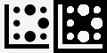

Para funcionar, o programa deve conhecer o bordo da chapa em que irá trabalhar. Esta função permite traçar o perímetro.

Modo de criação do perímetro
O programa permite ao operador desenhar o perímetro utilizando um dos seguintes modos:
 | Modo retângulo |
 | Modo por pontos |
A qualquer momento durante a criação do perímetro, é possível alternar entre os modos.
Ao passar do modo “por pontos“ para o modo “retângulo“, o perímetro será convertido num retângulo e todos os vértices do polígono serão perdidos.
Será solicitada confirmação para prosseguir com esta operação.
Retângulo
Este modo permite criar perímetros de forma retangular.
Para alterar o tamanho e a posição do retângulo, é possível arrastar os círculos amarelos na área de trabalho ou modificar os valores indicados na barra abaixo.

Medidas | Dimensões do perímetro no eixo X e no eixo Y. |
Posição | Coordenadas do vértice inferior esquerdo do retângulo relativamente ao vértice inferior esquerdo da bancada. |
Por pontos
Este modo permite criar polígonos de forma poligonal arbitrária.
Para tal, o operador pode dispor os pontos que formam o perímetro nas posições pretendidas, conforme mostrado na figura abaixo.

Neste modo, é possível interagir com o perímetro utilizando os seguintes botões:
 | Fechar perímetro |
 | Remover último ponto |
Depois de fechado, o perímetro ficará azul e os respetivos vértices serão indicados por círculos amarelos.
Tanto durante a fase de criação como na presença de um perímetro fechado, será sempre possível deslocar os vértices na área de trabalho para melhorar a precisão.
Barra inferior
O operador pode interagir com um perímetro presente na área de trabalho utilizando os botões situados na secção inferior do ecrã.
 | Magnetizar no laser em cruz |
 | Deslocamento do perímetro |
Criar um novo perímetro
O programa permite criar mais do que um perímetro no qual dispor as peças para a maquinação.
Além disso, é possível definir zonas da chapa nas quais não é possível inserir qualquer peça.
 | Perímetro |
 | Área a evitar |
 | Eliminar perímetro |
Os perímetros criados são visíveis na lista no canto superior direito. Para modificar um perímetro, basta selecioná-lo na área de trabalho ou selecionar a entrada correspondente na lista.
O perímetro atualmente selecionado apresenta contornos azuis e vértices amarelos, enquanto os restantes podem ser distinguidos também pela cor: verde para os perímetros das chapas e laranja para as áreas a evitar.

A partir deste ecrã, é possível adicionar cortes de alívio de tensões à chapa.
 | Preparação da chapa |
Para concluir a criação do perímetro, é solicitado ao operador que introduza algumas informações relativas à maquinação que deve ser efetuada.
Espessura | O operador deve indicar a espessura da chapa presente na bancada de trabalho. |
Nome | Nome a atribuir à maquinação da chapa. |
Cliente | É indicado o nome do cliente para o qual é realizada a encomenda. É um campo opcional. |
Encomenda | É indicado um identificador para a encomenda. É um campo opcional. |
A espessura da chapa e o nome da maquinação são campos obrigatórios que devem ser preenchidos antes de confirmar o perímetro.
Pelo contrário, não é necessário preencher as informações relativas às propriedades adicionais abaixo.
Áreas a evitar
As áreas a evitar são zonas da chapa que o operador pretende tornar indisponíveis para o posicionamento das peças na chapa.
As razões podem ser a presença de ruturas no material, de veios pouco estéticos ou a necessidade de preservar determinadas partes da chapa.
São representadas como zonas azuis dentro da área de trabalho.

Quando se utiliza a funcionalidade Nesting, as peças são dispostas de modo a não ocupar nenhuma destas áreas.